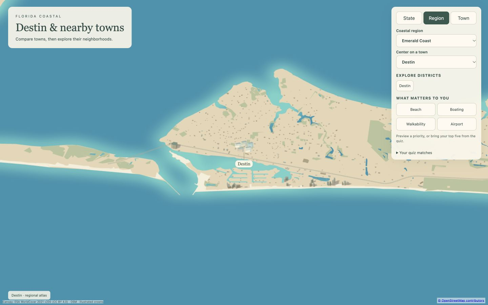
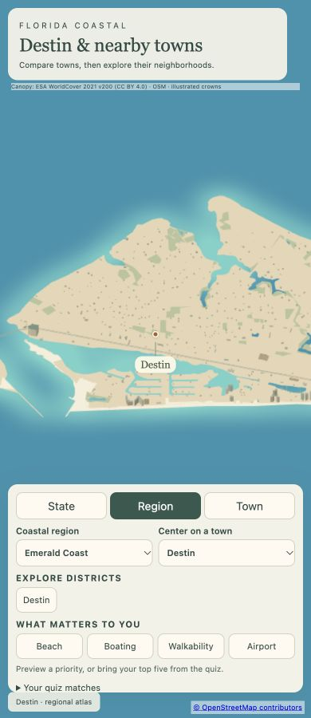

Destin
Open atlas · Accuracy CSV · Sourced medians
Region
Destin
Open boardwalk close-upA harbor town built around fishing charters and emerald water.
Source alignment

Manual fixes
- City-specific package requested by user; other cities in the parent region remain unchanged.
- Emerald Grande uses a sourced 13-story project description and explicitly estimated 39m height, within the unchanged scale cap.
- Mapped harbor pier centerlines added through the existing footbridge renderer; no invented docks.
- Input camera fitted to both geographic axes; Census background context extended to cover the wider region frame. Geometry and style implementation unchanged.
- Extended detailed building inputs east through Henderson Beach and Crystal Beach using OSM map extracts; added a measured ESA WorldCover canopy window.
- Input camera fitted to both geographic axes; Census background context extended to cover the wider region frame. Geometry and style implementation unchanged.
Hero landing images
Desktop 1600 × 1000 · Phone 800 × 1000 · Source conflict audit

Responsive review


Marina boats
22 illustrated moored boats beside mapped OSM docks. Positions and dock sources. Land-clearance checks pass; this is not live boat traffic.